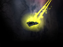

about the Jumpgate Universe...
Several factions struggle to work together to rebuild an interstellar civilization in star systems ravaged by collapse and a subsequent Dark Age. The Reconstruction Initiative has united several factions for the common good, but past rivalries and new competition threaten a cooperative future.
Pilots Wanted
| Combat | ||
|
Serve as a military combat pilot and defend your faction's interests from the grasping demands of opposing groups. The ominous
Conflux presence also offers the chance for frequent target practice. |
||
| Trade Your Goods | ||
|
Spacecraft pilots are crucial in delivering basic
building blocks to station manufacturing centers across known space... you
can have a direct influence in what gets produced and where. Acquiring the
right goods at the right time ensures your success. |
||
| Prospecting | ||
|
The known sectors are abundant in resources that are yours for the taking.
Strike it rich by exploiting asteroids for their ores with your mining equipment or scooping vital gases from
free-floating interstellar storms. |
||
| The Deep Seas of Space | ||
|
Beyond asteroid mining, many pilots make a career of searching derelict wreckage for free salvage.
Some artifact finds can fetch millions of credits from other players
in need of superior equipment. |
||
| Join a Squad | ||
| Keep those pesky independents off your back with a squad membership. You get the benefit of a strong organization who can send help when you are in a bind. Together you stand, divided you fall. | ||
| In Jumpgate, there are no character classes restricting your gameplay. On any given day, pilots are needed to fill many roles: |
|
| Recon Pilot: | 
Recon Pilots fly scouting and survey missions, often into Conflux-infested space. Get in, get the data, and get out. Boldness and a fast ship are a must. |
| Transport Pilot: |
Heavy Transport Pilots perform long distance cargo missions - often carrying vital supplies for distant impoverished systems, or industrial materials for crucial production needs. The "salt of space", trader pilots build the economic foundation on which most other flight operations rely. |
| Combat Pilot: |
Combat Pilots handle sector sweeps, escort missions, and authoritative patrols in their faction's Core Sectors and surrounds. Pirates are to be treated with extreme prejudice. Reflexes, fearlessness, and spatial awareness are key assets. . |
Factional options:
PROS: - 16000 credits signing bonus - extended cargo - better shielding |
PROS: - 22000 credits signing bonus - mining equipment bonus - speed and maneuverability |
PROS: - 19000 credits signing bonus - heavy armament - better armor |